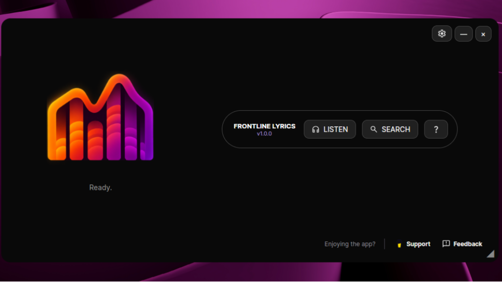
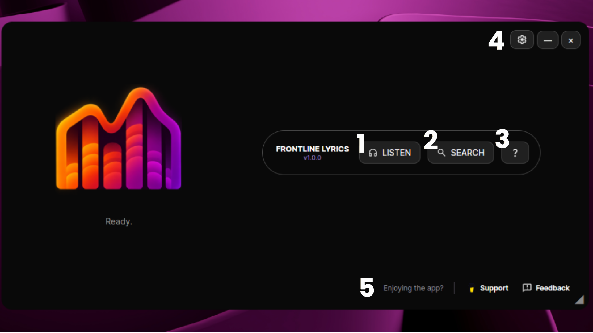
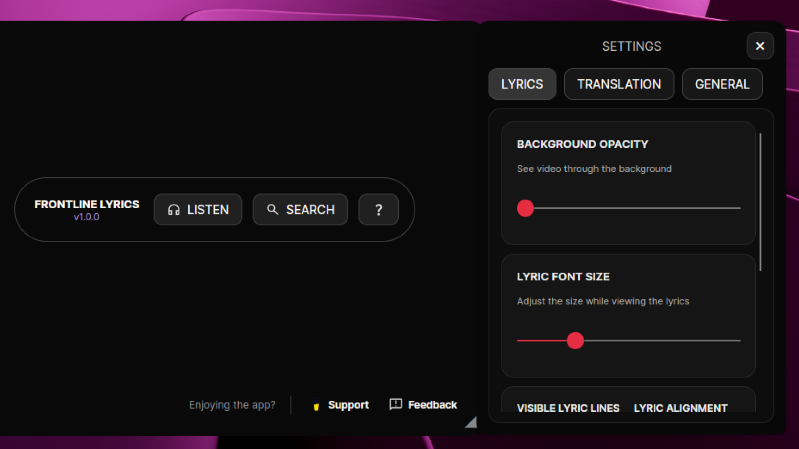
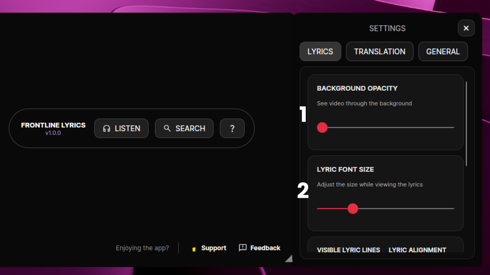
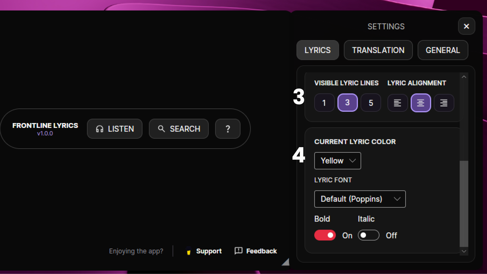
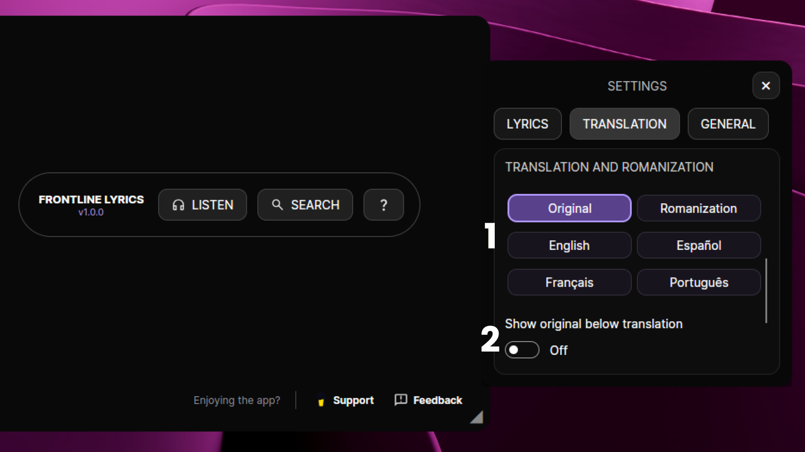
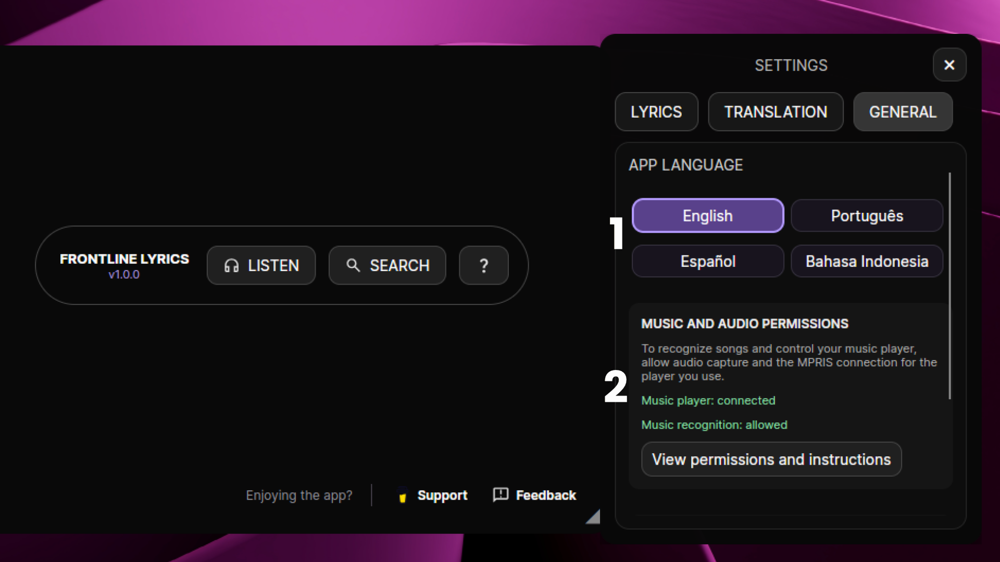
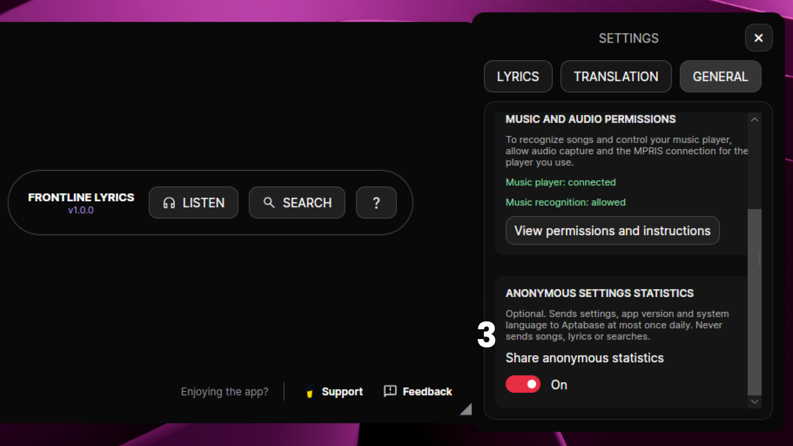
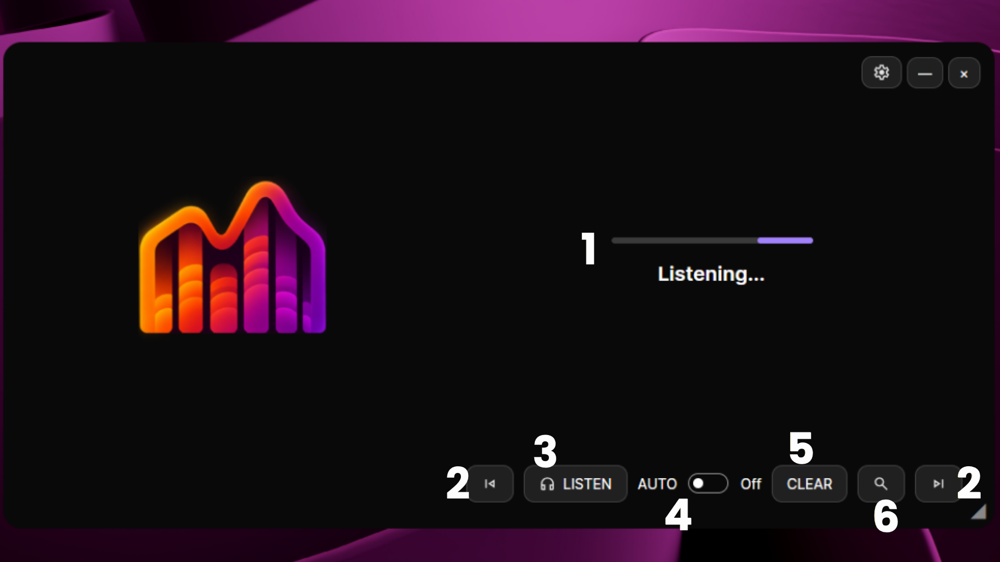
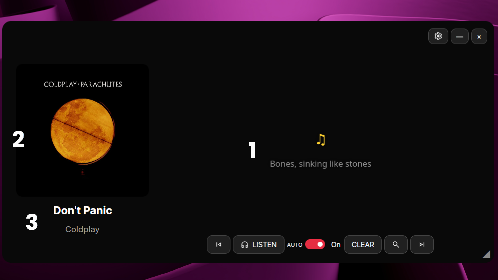

This app identifies whatever song is playing on your computer and shows the synced lyrics on screen. Works with Spotify, YouTube, or any other player. Just let the music play.

Jump straight to any part of the tutorial.

The numbers below match the markers on the screenshot.
Open Settings to adjust Lyrics, Translation and General preferences.







The screen switches to show:
The lyrics appear on screen, along with:
